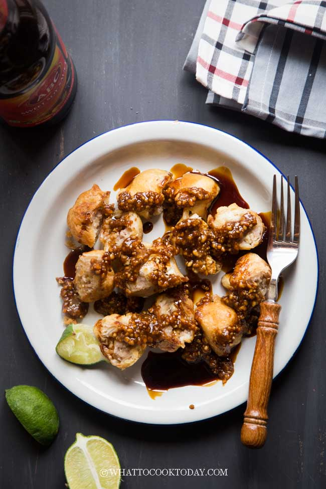

Batagor (Fried Dumplings with Peanut Sauce)

What is Batagor
Many of the words in Indonesia are being abbreviated, for example batagor is not a “real” word on its own. It is an abbreviation from Ba for Bakso (meatballs), Ta for Tahu (tofu), Gor for goreng (deep-fried). Batagor is a popular street food in the city of Bandung in West Java. But batagor can be easily found across Indonesia these days.
Batagor is said to be an adaptation of the Chinese Indonesian Siu Mai. Tofu and wonton skins are usually stuffed with fish or meat paste and then steamed and coat with batter and deep-fried and then drenched in peanut sauce, drizzle of kecap manis, and spicy sambal sauce sometimes.
Ingradient
- 4 (8 ounce) containers tofu
- ½ cup prawns - peeled, deveined, and minced
- 1 egg, lightly beaten
- 1 ½ ounces ground chicken
- 1 green onion, chopped
- 2 teaspoons cornstarch
- 1 teaspoon sesame oil
- salt and ground white pepper to taste
Batter:
- 1 egg
- 6 tablespoons all-purpose flour
- cold water, or as needed
Sauce:
- ⅓ cup water
- ¼ cup coarsely chopped dry roasted peanuts
- 1 fresh red chile pepper, finely chopped
- 2 cloves garlic, minced
- 2 teaspoons white vinegar
- 1 teaspoon white sugar
- 1 teaspoon salt
- oil for frying
Steps or Directions
- Slice each tofu square diagonally to make 8 triangles. Make a cut into the base of each tofu triangle and scoop out enough of tofu to create a pocket.
- Combine scooped-out tofu pieces, prawns, egg, ground chicken, green onion, cornstarch, sesame oil, salt, and pepper in a bowl for the filling. Carefully stuff filling back into the tofu triangles; the filling will bulge out.
- Place a steamer insert into a saucepan and fill with water to just below the bottom of the steamer. Bring water to a boil. Add stuffed tofu triangles, cover, and steam for 20 minutes.
- Meanwhile, make the batter. Mix egg and flour in a bowl. Whisk in enough water to give batter a medium-thin consistency.
- Combine water, peanuts, red chile pepper, garlic, vinegar, salt, and sugar in a bowl. Stir until salt and sugar have dissolved and set sauce aside.
- Remove cooked tofu triangles from the steamer.
- Heat oil in a wok until hot. Dip triangles into the batter and slowly lower into the hot oil. Fry in batches until golden brown and the batter is cooked through, about 5 minutes. Drain on paper towels. Serve hot with the peanut sauce.